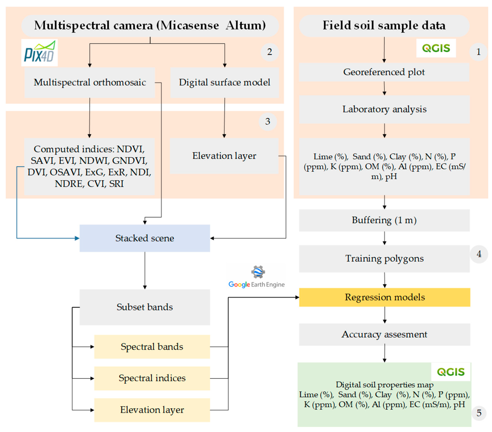

Implementación de computación en la nube para el mapeo digital de propiedades de suelos agrícolas a partir de imágenes multiespectrales UAV de alta resolución
S. Pizarro1,2 N. Picrope3 D. Figueroa1 C. Carbajal4 M. Quispe5 J. Vera5 L. Alejandro5 L. Achallma5 I. Gonzalez5 W. Salazar6 H. Loayza7,8 J. Cruz4 C. Arbizu6,9
1 Dirección de Desarrollo Tecnológico Agrario, Instituto Nacional de Innovación Agraria (INIA), Huancayo, Junin, Peru
2 Facultad de Zootecnia, Andean Ecosystem Research Group, Universidad Nacional del Centro del Perú, Huancayo, Junin, Peru
3 Department of Earth and Ocean Sciences, University of North Carolina Wilmington, S College Rd., Wilmington, NC, USA
4 Dirección de Supervisión y Monitoreo en las Estaciones Experimentales Agrarias, Instituto Nacional de Innovación Agraria (INIA), Av. La Molina, Lima, Peru
5 Dirección de Supervisión y Monitoreo en las Estaciones Experimentales Agrarias, Instituto Nacional de Innovación Agraria (INIA), Santa Ana, Huancayo, Junin, Peru
6 Dirección de Desarrollo Tecnológico Agrario, Instituto Nacional de Innovación Agraria (INIA), Av. La Molina, Lima, Peru
7 International Potato Center (CIP), Headquarters P.O. Box, Lima, Peru
8 Programa Académico de Ingeniería Ambiental, Facultad de Ingeniería, Universidad de Huánuco, Huánuco, Peru
9 Facultad de Ingeniería y Ciencias Agrarias, Universidad Nacional Toribio Rodríguez de Mendoza de Amazonas (UNTRM), Chachapoyas, Amazonas, Peru.
Introducción
Los suelos agrícolas tienen propiedades físicas y químicas heterogéneos en el contexto espacial que determinan el desarrollo y crecimiento de los cultivos. La información detallada de las propiedades de los suelos permite delimitar su aptitud y unidades de manejo que garanticen la salud de los cultivos y el éxito de la producción. Dicha información se puede adquirir mediante análisis detallados de laboratorio, las cuales en complemento con técnicas de sensoramiento remoto nos permite evaluar el potencial productivo agrícola a escala espacial detallada, optimizando recursos y el tiempo necesario para la obtención de un número mayor de muestras[1,2]. Las tecnologías que soportan este enfoque de mapeo se basa en el uso de sistemas de información geográfica (SIG), Sistemas de Posicionamiento Global (GPS), e imágenes multiespectrales de alta resolución colectadas con UAS, que permiten espacializar las propiedades de suelos agrícolas en alta resolución utilizando técnicas de computación en la nube.
Objetivo
Implementar un enfoque de mapeo digital de propiedades físicos químicas de suelos agrícolas utilizando técnicas de computación en la nube (Google Earth Engine-GEE) en el procesamiento de imágenes multiespectrales de alta resolución tomadas con sistemas UAV (modelo Altum; MicaSense Inc.), entrenadas con algoritmos de inteligencia artificial, con la determinación de las propiedades físico-químicas del suelo (limo (%), arcilla (%), arena (%), conductividad eléctrica (CE) (mS/m), nitrógeno (N) (ppm) , fósforo (P) (ppm), potasio (K) (ppm), materia orgánica (MO) (%), aluminio (Al) (ppm) y pH) en laboratorio.
Metodología
El estudio se realizó en la Estación Experimental Agrícola de Santa Ana del Instituto Nacional de Innovación Agraria (INIA) (75°13′17.60″W, 12°0′42.36″S ), ubicado en el distrito de El Tambo, provincia de Huancayo y departamento de Junín (Perú). La Estación tiene un rango altitudinal de 3303 a 3325 m.s.n.m., con una fisiografía dominada por el paisaje llano del valle montañoso. Los campos agrícolas de donde se registraron los datos cubren 49.83 ha de 67.08 ha distribuidas en 42 parcelas.
 Figura 1. Ubicación del área de estudio, Santa Ana, Junín (Perú)
Figura 1. Ubicación del área de estudio, Santa Ana, Junín (Perú)
El marco metodológico empleado en este estudio se presenta en la Figura 2 y se describe con más detalle en las siguientes cinco subsecciones de métodos:

Simple Ratio Red/Blue Iron Oxide (SRI), Normalized Difference Vegetation Index (NDVI), Enhanced Vegetation Index (EVI), Normalized Difference Water Index (NDWI), Soil Adjusted Vegetation Index (SAVI), Green Normalized Difference Vegetation Index (GNDVI), Difference Vegetation Index (DVI), Optimized Soil Adjusted Vegetation Index (OSAVI), Excess Green index (ExG), Normalized Difference Index (NDI), Red-edge Normalized Difference Vegetation Index (NDRE), Chlorophyll vegetation index (CVI).
Figura 2. Representación del marco metodológico utilizado en este estudio
Resultados
Se seleccionaron los mejores modelos de regresión para luego crear mapas de la distribución cuantitativa espacial de cada propiedad del suelo mostrando la importancia relativa de los predictores (Figuras 3 y 4) .

Figura 3. Mapa de predicción para pH (izquierda) e importancia relativa de los predictores (derecha).

Figura 4. Mapas de predicción para N, P y K (izquierda) e importancia relativa de los predictores (derecha).
Conclusiones
El uso de los sensores multiespectrales a bordo de vehículos aéreos no tripulados (UAV) pueden mejorar los sistemas de información de la tierra y la agricultura de precisión. Los algoritmos de aprendizaje automático (CART, RF y XGBoost) utilizando Google Earth Engine [3,4] logran que el procesamiento sea más accesible sin el uso de servidores físicos en el mapeo de propiedades físico-químicas. Como mejores predictores se tienen a estar asociados a índices espectrales (SRI, GNDVI, NDWI y ExG), siendo CART el algoritmo más eficiente y consistente espacialmente para la mayoría de las propiedades del suelo. Estos resultados sugieren que el uso de algoritmos de aprendizaje automático con datos reales es eficaz para la estimación espacial de las propiedades del suelo [5,6] usando imágenes multiespectrales basadas en UAV, lo que puede contribuir a una gestión más eficaz de los cultivos y campos agrícolas.
Agradecimientos
Los equipos LABSAF y AGPRES de Santa Ana por proporcionar infraestructura y equipos para la recolección de datos del suelo y análisis de laboratorio. Agradecemos a STC-CGIAR y al Vicerrectorado de Investigación de la UNTRM.